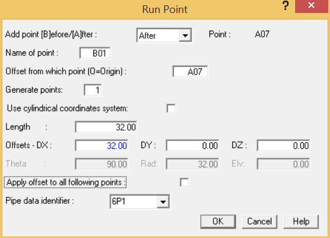

.png) Select Insert > Piping
Components > Run.
Select Insert > Piping
Components > Run.
The Run Point dialog is displayed. You will now define a run to the nozzle/vessel connection point so that the local flexibilities at the nozzle/vessel connection can be specified.

- Input 32 {9750} in the DX-offset field then press the OK button to close the dialog.